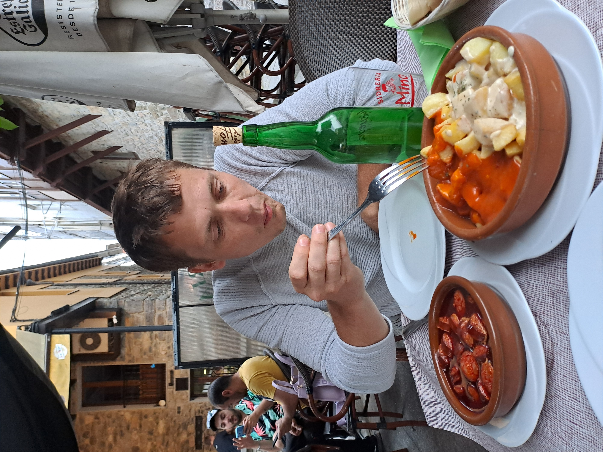

Host & supervision
Host
Dr Plhal
Dr
Plhal is a postdoctoral researcher affiliated at Mendel University
in Brno.He is interested in wild boar ecology, with a especial interest
in management. During his visit, we worked on designing program to
monitor wild boar population in Czech Republic. We also found time for a
couple of days on the field, and even more relevant… he discovered
‘sidra’ and enjoyed Asturian gastronomy. 

Miss Escobar
Miss
Escobar is a PhD student affiliated at Autonomus Univesity of
Barcelona. She is interested in urban and peri-urban wild boar
populations in the area of Barcelona (Spain) (Did you know that one of
these wild boars stole Shakira’s mobile?? See
here. During his visit, we worked on the analysis of camera trapping
data, especially focused on estimate population density applying random
encounter model. Mery also joined in the experiments we had going on…as
this picture (almost!) proves 
Supervision
PhD thesis
I have participated in the supervision of PhD chapters of four different thesis.
PhD student: M. Escobar; Chapter title Seasonal variability in wildlife monitoring: Random Encounter Model and interaction Networks in peri-urban wild boar; University Autonomous University of Barcelona (Spain)
PhD student: Z. Delisle; Chapter title Reducing bias in density estimates for unmarked populations that exhibit reactive behaviour towards camera traps; University Purdue University (USA)
PhD student: A. Zampetti; Chapter title Towards an automated protocol for wildlife density estimation using camera-traps; University Sapienza University of Rome (Italy)
PhD student: M. Theng; Chapter title Performance of camera trap-based density estimators for unmarked populations; University University of Adelaide (Australia)
MSc and BSc thesis
I have supervised four BSc and three MSc thesis. These theses have addressed different aspects related to the monitoring and study of wildlife. Some examples:
Student: B. Fernandez; Title Evaluation of animal behaviour patterns in camera-trapping studies; University University of Castilla-La Mancha (Spain), Environmental sciences
Student: A. Díaz; Title Effect of the season on population density estimates of red deer Cervus elaphus obtained by distance sampling; University University of Castilla-La Mancha (Spain), Environmental sciences